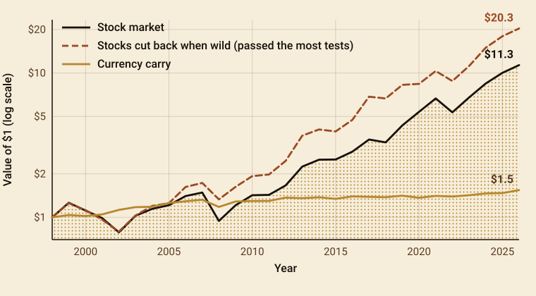

Parity
A test bench that runs trading strategies through 11 fixed tests and compares each one with holding the S&P 500. 16 strategies have been tested. None passed.
I built the test engine and the web app, October 2026 to now, on a small team. Python, TypeScript and Supabase.
What it tests
Testing many strategies and keeping the best one overstates results. Parity counts every trial, 188 so far, and applies a deflated Sharpe threshold that rises with the count.
The project started with one question: could a currency strategy, perhaps informed by commodity prices and macro news, beat the S&P 500 after costs and risk? The first three strategies failed, so the scope widened. Every idea, including stock rules, now goes through the same tests.
Pipeline
- Scrapers pull free daily data: 9 currencies, 10 interest rates, oil, gas, copper, the S&P 500 and the VIX.
- Strategies are one file each and turn data into target weights.
- One backtester replays history for every strategy the same way. It charges trading costs, credits interest and can scale to the market’s own risk while paying for borrowing.
- The gauntlet scores the results.
- A nightly job runs everything and posts to a private dashboard.
The catalog holds 72 algorithms and 36 data sources, each with a written report.
The gauntlet
Every strategy runs all 11 tests every time. The bars were fixed before any results were seen. Group A has six tests of whether the strategy beats the market, and all six must pass. Group B has five tests of whether the effect is real or luck.
| Strategy | A1 | A2 | A3 | A4 | A5 | A6 | B1 | B2 | B3 | B4 | B5 |
|---|---|---|---|---|---|---|---|---|---|---|---|
| Stocks, 10-month trend7 of 11 | A1 pass | A2 pass | A3 fail | A4 pass | A5 fail | A6 fail | B1 pass | B2 pass | B3 pass | B4 pass | B5 fail |
| Stocks, golden cross7 of 11 | A1 pass | A2 pass | A3 fail | A4 pass | A5 fail | A6 pass | B1 pass | B2 fail | B3 pass | B4 pass | B5 fail |
| Stocks, volatility managed8 of 11 | A1 pass | A2 pass | A3 fail | A4 pass | A5 fail | A6 pass | B1 pass | B2 pass | B3 pass | B4 pass | B5 fail |
| Stocks, turn of month6 of 11 | A1 pass | A2 pass | A3 fail | A4 pass | A5 fail | A6 fail | B1 pass | B2 fail | B3 pass | B4 pass | B5 fail |
| Stocks plus currency trend6 of 11 | A1 pass | A2 pass | A3 fail | A4 pass | A5 fail | A6 fail | B1 pass | B2 pass | B3 fail | B4 pass | B5 fail |
| Stocks, sell in May5 of 11 | A1 pass | A2 pass | A3 fail | A4 pass | A5 fail | A6 fail | B1 pass | B2 fail | B3 fail | B4 pass | B5 fail |
| Currency carry3 of 11 | A1 fail | A2 fail | A3 fail | A4 fail | A5 fail | A6 fail | B1 pass | B2 fail | B3 pass | B4 pass | B5 fail |
| Currency carry, trend and value4 of 11 | A1 fail | A2 fail | A3 fail | A4 fail | A5 fail | A6 fail | B1 pass | B2 pass | B3 fail | B4 pass | B5 pass |
| Dollar carry2 of 11 | A1 fail | A2 fail | A3 fail | A4 fail | A5 fail | A6 fail | B1 fail | B2 fail | B3 pass | B4 pass | B5 fail |
| Currency trend, 12 months3 of 11 | A1 fail | A2 fail | A3 fail | A4 fail | A5 fail | A6 fail | B1 fail | B2 fail | B3 pass | B4 pass | B5 pass |
| Currency moving-average cross3 of 11 | A1 fail | A2 fail | A3 fail | A4 fail | A5 fail | A6 fail | B1 fail | B2 fail | B3 pass | B4 pass | B5 pass |
| Oil gap1 of 11 | A1 fail | A2 fail | A3 fail | A4 fail | A5 fail | A6 fail | B1 fail | B2 fail | B3 pass | B4 fail | B5 fail |
| Currency value0 of 11 | A1 fail | A2 fail | A3 fail | A4 fail | A5 fail | A6 fail | B1 fail | B2 fail | B3 fail | B4 fail | B5 fail |
| Currency momentum1 of 11 | A1 fail | A2 fail | A3 fail | A4 fail | A5 fail | A6 fail | B1 fail | B2 fail | B3 fail | B4 fail | B5 pass |
| Currency RSI reversion0 of 11 | A1 fail | A2 fail | A3 fail | A4 fail | A5 fail | A6 fail | B1 fail | B2 fail | B3 fail | B4 fail | B5 fail |
| Oil and gas trend1 of 11 | A1 fail | A2 fail | A3 fail | A4 fail | A5 fail | A6 fail | B1 fail | B2 fail | B3 fail | B4 fail | B5 pass |
Filled squares passed. Third official run, 1999 to 2026. 57 of 176 tests passed.
A. Beats the S&P 500
- A1 Sharpe ratio above the market’s.
- A2 More yearly return than the market at the market’s own volatility, with borrowing paid for.
- A3 Deflated Sharpe of 0.95 or more, which allows for the number of ideas tried.
- A4 Still above the market with trading costs doubled.
- A5 Above the market in 1999 to 2008, 2009 to 2019 and 2020 on, separately.
- A6 Above the market over the last five years.
B. Is the effect real
- B1 The 95% range of Sharpe over 1,000 resampled histories is above zero.
- B2 Beats 95% of 500 copies with the same bets placed on random dates.
- B3 At least 75% of nearby parameter settings have a positive Sharpe.
- B4 Sharpe stays above zero without its best year.
- B5 Zero or positive on average in the S&P 500’s worst 5% of months.
Results
The third official run put all 16 strategies through the gauntlet over 1999 to 2026. Six stock rules score above the market, from 0.57 to 0.75. All six pass A1, A2 and A4 and fail A3 and A5. Every currency and commodity strategy scores below 0.42.

Currency carry
Holding high-interest currencies earns a small amount fairly reliably. It scores 0.41, far below stocks, and it loses when stocks crash.
Currency trend
Following currency trends worked mostly from 2000 to 2008. Over the last five years it made nothing.
Oil gap
The idea that two oil-linked currencies catch up with oil shows no reliable effect as built.
Official runs
An official result counts only if the plan was written down before the run. The plan lists the strategies, their settings and the bar to pass. The run then executes on a clean machine with frozen code and fingerprinted data, and the result goes into a tamper-evident ledger. Result tables in the docs are generated from the ledger.
There have been 3 official runs, and all failed their plan. The first, in 2000 to 2026 with costs, tested three strategies. Carry scored 0.39 and passed 3 of 11 tests, currency trend 0.17 and 3 of 11, the oil gap 0.06 and 1 of 11, against 0.50 for the S&P 500 on those dates. After the weekly oil idea failed, a monthly version looked better. That was seen only after looking, so a strict rule was written first: pass at least 4 of the 5 reality tests. It passed 2, and the idea was retired.
The dashboard
The web app is private and sign-in only. It has the strategy table, the algorithm catalog, the ledger, a lab and a glossary. No real money is traded, and nothing here is investment advice.

Open questions
- Does holding stocks and adding currency trend on top beat stocks alone?
- Do surprise economic and energy news move currencies in a predictable direction?
- Does the dollar weaken on days the Fed announces a decision?